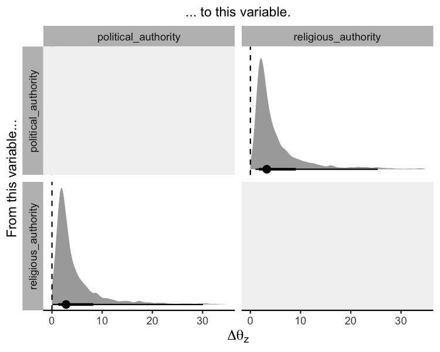

Overview
The coevolve package allows the user to fit Bayesian generalized dynamic phylogenetic models in Stan. These models can be used to estimate how traits have coevolved over evolutionary time and to assess causal directionality (X → Y vs. Y → X) and contingencies (X, then Y) in evolution.
While existing methods only allow pairs of binary traits to coevolve (e.g., BayesTraits), the coevolve package allows users to include multiple traits of different data types, including binary, ordinal, count, and continuous traits.
Generalized dynamic phylogenetic models
Under the hood, the package estimates the parameters of the following stochastic differential equation along the branches of a phylogenetic tree. The equation partitions evolutionary change in the traits into state-dependent deterministic selection and state-independent Brownian motion, similar to a multivariate Ornstein-Uhlenbeck process:
\[ d\eta(t) = (\textbf{A}\eta(t) + \textbf{b}) + \textbf{G}dW(t) \]
\(\eta(t)\) is a vector of latent variables at time \(t\). The matrix \(\textbf{A}\) represents “selection” with strictly negative autoregressive terms on the diagonal. Off-diagonals may be positive or negative, controlling the effect of each trait on the others (e.g., \(\textbf{A}[2,1]\) represents the effect of \(\eta_1\) on \(\eta_2\)). \(\textbf{b}\) is a vector of continuous time intercepts. The matrix \(\textbf{G}\) is the Cholesky decomposition of the positive semi-definite “drift” covariance matrix \(\textbf{Q}\) which scales the Brownian motion process \(W(t)\). An observation-level measurement model then links \(\eta\) to the observations at the tips of the tree.
For more information about the model, refer to the introductory methods paper here.
Installation
You can install the coevolve package with:
install.packages("coevolve", repos = c('https://ropensci.r-universe.dev', 'https://cloud.r-project.org'))How to use coevolve
As an example, we analyse the coevolution of political and religious authority in 97 Austronesian societies. These data were compiled and analysed in Sheehan et al. (2023). Both variables are four-level ordinal variables reflecting increasing levels of authority. We use a phylogeny of Austronesian languages to assess patterns of coevolution.
fit <-
coev_fit(
data = authority$data,
variables = list(
political_authority = "ordered_logistic",
religious_authority = "ordered_logistic"
),
id = "language",
tree = authority$phylogeny,
# manually set prior
prior = list(A_offdiag = "normal(0, 2)"),
# arguments for cmdstanr
parallel_chains = 4,
refresh = 0,
seed = 1
)
#> Running MCMC with 4 parallel chains...
#>
#> Chain 4 finished in 282.2 seconds.
#> Chain 1 finished in 301.3 seconds.
#> Chain 3 finished in 372.3 seconds.
#> Chain 2 finished in 397.0 seconds.
#>
#> All 4 chains finished successfully.
#> Mean chain execution time: 338.2 seconds.
#> Total execution time: 397.1 seconds.
#> Warning: 10 of 4000 (0.0%) transitions ended with a divergence.
#> See https://mc-stan.org/misc/warnings for details.The results can be investigated using:
summary(fit)
#> Variables: political_authority = ordered_logistic
#> religious_authority = ordered_logistic
#> Data: authority$data (Number of observations: 97)
#> Phylogeny: authority$phylogeny (Number of trees: 1)
#> Draws: 4 chains, each with iter = 1000; warmup = 1000; thin = 1
#> total post-warmup draws = 4000
#>
#> Autoregressive selection effects:
#> Estimate Est.Error 2.5% 97.5% Rhat Bulk_ESS Tail_ESS
#> political_authority -0.67 0.54 -1.95 -0.02 1.00 2418 1577
#> religious_authority -0.77 0.57 -2.10 -0.04 1.00 2712 2298
#>
#> Cross selection effects:
#> Estimate Est.Error 2.5% 97.5% Rhat Bulk_ESS Tail_ESS
#> political_authority ⟶ religious_authority 2.25 0.98 0.32 4.32 1.00 1335 1975
#> religious_authority ⟶ political_authority 1.80 1.11 -0.29 4.07 1.01 1240 2146
#>
#> Drift parameters:
#> Estimate Est.Error 2.5% 97.5% Rhat Bulk_ESS Tail_ESS
#> sd(political_authority) 1.92 0.85 0.17 3.50 1.01 713 814
#> sd(religious_authority) 1.30 0.81 0.06 2.94 1.00 754 1144
#> cor(political_authority,religious_authority) 0.25 0.32 -0.43 0.77 1.00 2262 2591
#>
#> Continuous time intercept parameters:
#> Estimate Est.Error 2.5% 97.5% Rhat Bulk_ESS Tail_ESS
#> political_authority 0.22 0.94 -1.63 2.08 1.00 5319 2828
#> religious_authority 0.22 0.94 -1.58 2.06 1.00 5725 2185
#>
#> Ordinal cutpoint parameters:
#> Estimate Est.Error 2.5% 97.5% Rhat Bulk_ESS Tail_ESS
#> political_authority[1] -1.30 0.90 -3.02 0.50 1.00 3239 2666
#> political_authority[2] -0.55 0.87 -2.23 1.20 1.00 3556 2535
#> political_authority[3] 1.65 0.88 -0.03 3.40 1.00 3822 3241
#> religious_authority[1] -1.53 0.94 -3.40 0.37 1.00 3653 2465
#> religious_authority[2] -0.84 0.90 -2.61 1.01 1.00 3813 2753
#> religious_authority[3] 1.60 0.93 -0.15 3.51 1.00 3992 3139
#> Warning: There were 10 divergent transitions after warmup.
#> http://mc-stan.org/misc/warnings.html#divergent-transitions-after-warmupThe summary provides general information about the model and details on the posterior draws for the model parameters. In particular, the output shows the autoregressive selection effects (i.e., the effect of a variable on itself in the future), the cross selection effects (i.e., the effect of a variable on another variable in the future), the amount of drift, continuous time intercept parameters for the stochastic differential equation, and cutpoints for the ordinal variables.
While this summary output is useful as a first glance, it is difficult to interpret these parameters directly to infer directions of coevolution. Another approach is to “intervene” in the system. We can hold variables of interest at their average values and then increase one variable by a standardised amount to see how this affects the optimal trait value for another variable.
The coev_plot_delta_theta() function allows us to visualise \(\Delta\theta_{z}\) for all variable pairs in the model. \(\Delta\theta_{z}\) is defined as the change in the optimal trait value of one variable which results from a one median absolute deviation increase in another variable.
coev_plot_delta_theta(fit, prob_outer = 0.90)
#> Warning: Removed 549 rows containing non-finite outside the scale range (`stat_density()`).
This plot suggests that both variables influence one another in their coevolution. A standardised increase in political authority results in an increase in the optimal trait value for religious authority, and vice versa. In other words, these two variables reciprocally coevolve over evolutionary time.
Code of conduct
Please note that this package is released with a Contributor Code of Conduct. By contributing to this project, you agree to abide by its terms.
Citing coevolve
When using the coevolve package, please cite the following paper:
- Ringen, E., Claessens, S., Martin, J. S., & Jaeggi, A. V. (2026). Trait coevolution and causal inference using generalized dynamic phylogenetic models. Methods in Ecology and Evolution, 17(6), 1818-1836. https://doi.org/10.1111/2041-210x.70303